Designer
大山隆仁
@bigmountain421
lifeistech/Mentor/UIUX/Graphic/Web/
Photographer/Leaders/テクノロジア魔法学校WebDesign/
Gotham bold/#f2f2f0
 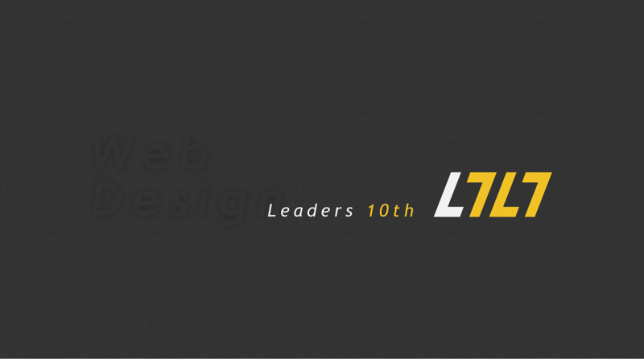
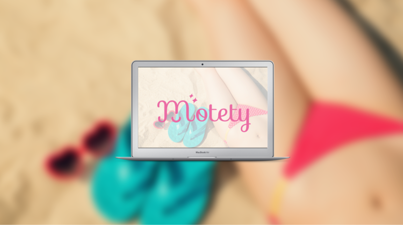
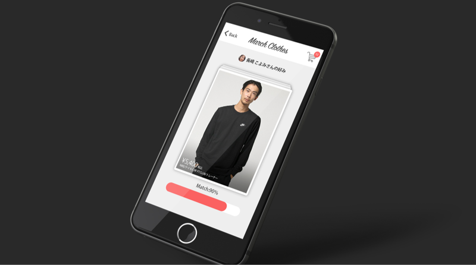
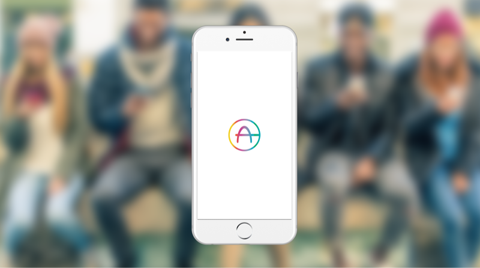
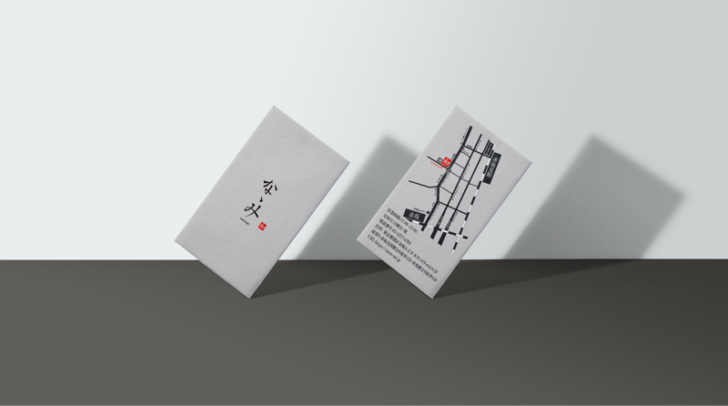
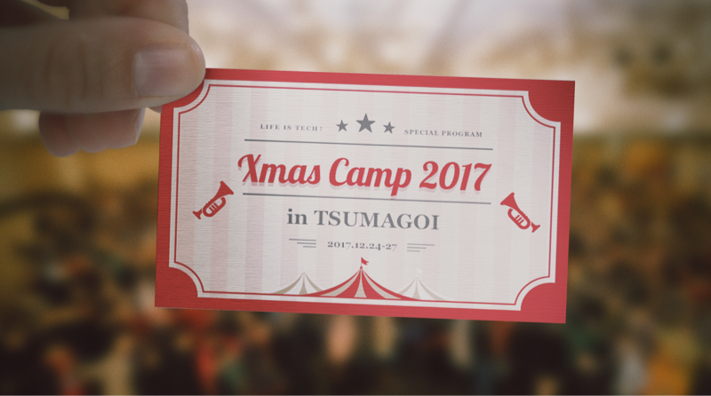
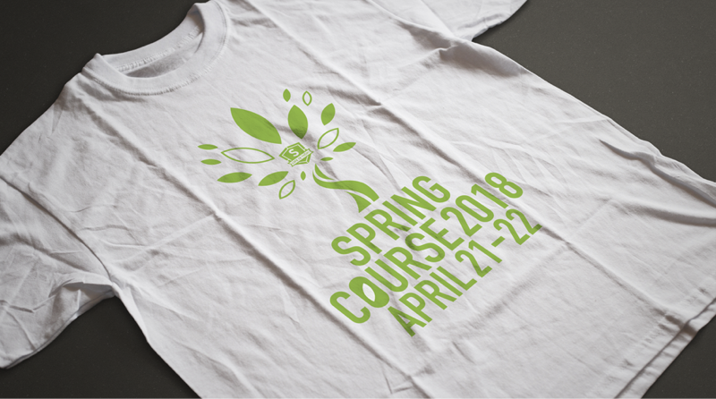
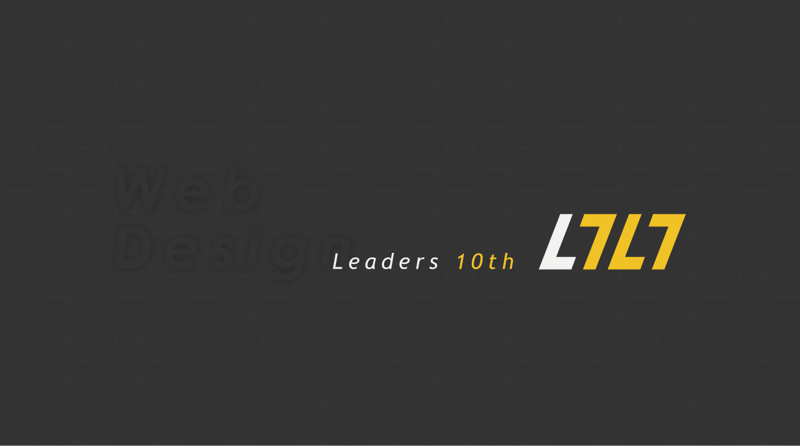
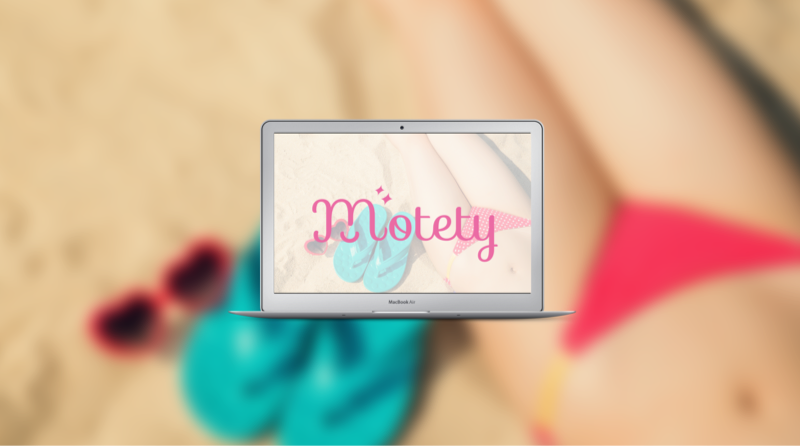
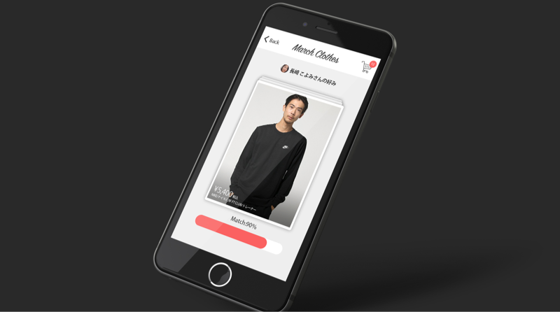
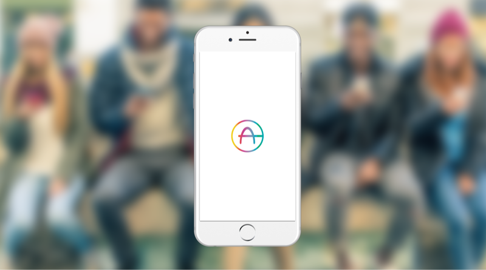
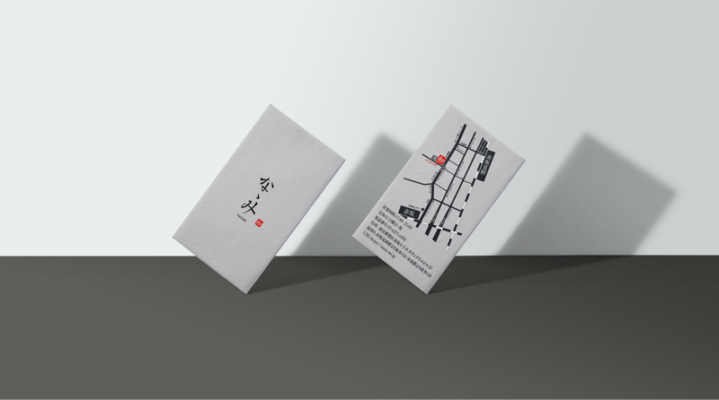
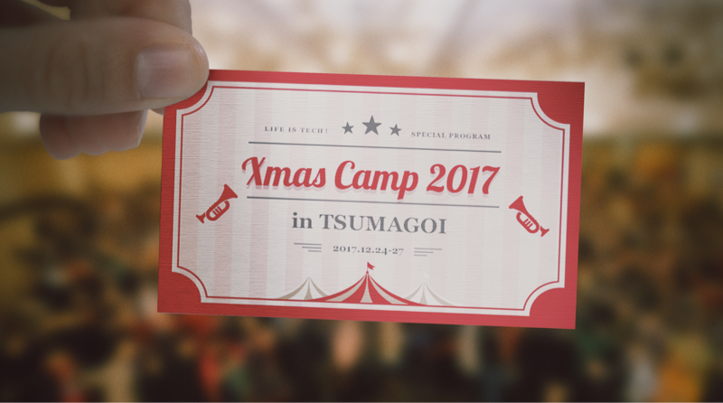
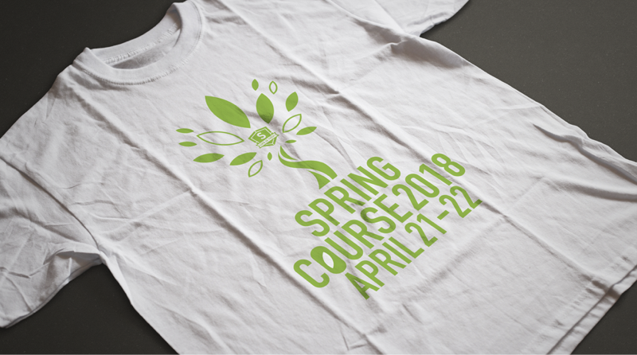
Title
テクノロジア魔法学校
Work
ディズニーとライフイズテックのコラボで制作した今までにないプログラミング教材です。ディズニーの世界観を使って楽しみながらプログラミングを学べるこの教材は主にメディアアート/ゲーム/Webデザインの3つのコースがあります。
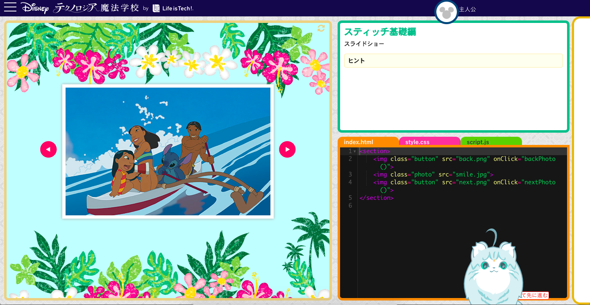
プログラミングの学習において特に問題となっているのが「学習の継続」と「苦手意識」だと考えており、それぞれのディズニータイトルの世界観を使ったレッスンをクリアするたびにアイテムが家に届きモチベーションをあげる仕組みを取っています。ライフイズテックはプログラミングを楽しみながら学べるようにエンターテイメント要素も含みながら学習することができるので誰でも簡単にプログラミングを学ぶことができる仕組みになっています。ライフイズテックのメンターは普段5,6人の中高生に大学生が１人ついて対面でプログラミングを教えています。中高生がどこでつまづくか、どういう教え方をすればわかりやすいかなど教育のノウハウを知っている大学生メンターが教材を作成しているのでわかりやすい教材を作ることがきます。 自分はそこでWebデザインコースの教材を担当しており、HTML/CSS/JavaScriptの教材を作っています。実際に出しているレッスンは一部ですが、１年間で数十個のレッスンを作成しており最適な教え方やディズニー世界観を最大限に引き出すデザインを製作していきました。繰り返しやることで誰でもWebサイトを作れるようなカリキュラムになっています。
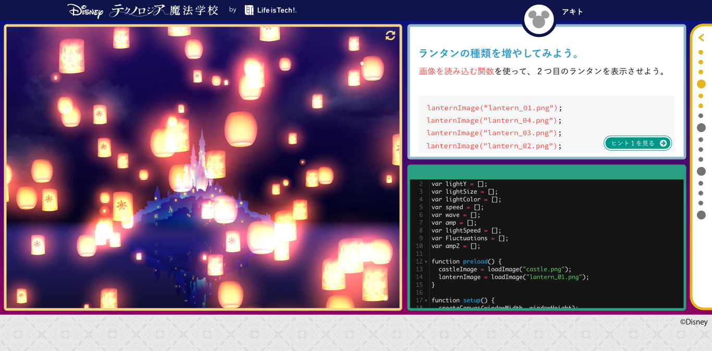
インターンですがデザインチームに入れてもらいUI/UXを担当しました。
世界観はディズニーが誕生した1920年代アメリカでアールヌーヴォを意識したデザインで幾何学的な模様を使ったりしています。仕様書を元にデザインを繰り返しチーフデザイナーと一緒に製作しています。素材を作ってくれるデザイナーから素材をもらい、それを仕様書を元にデザインツールのsketchを使ってInVisionで繰り返しデザインを作りました。半年間で100ページ以上のデザインを作成しました。
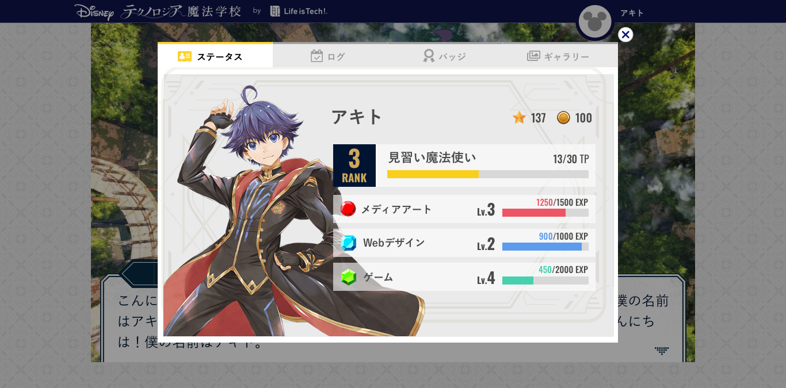
Title
18卒追いコンLOGO
Concept
さよならの春
Work
ライフイズテック18卒追いコンのロゴを製作しました。毎年ライフイズテック を代表するデザイナーがロゴ作成を担当しています。今回は卒業生を本気泣かせるという思いを込めて寂しさを込めたタイポグラフィに春をイメージした桜のシルエットを使いデザインしました。
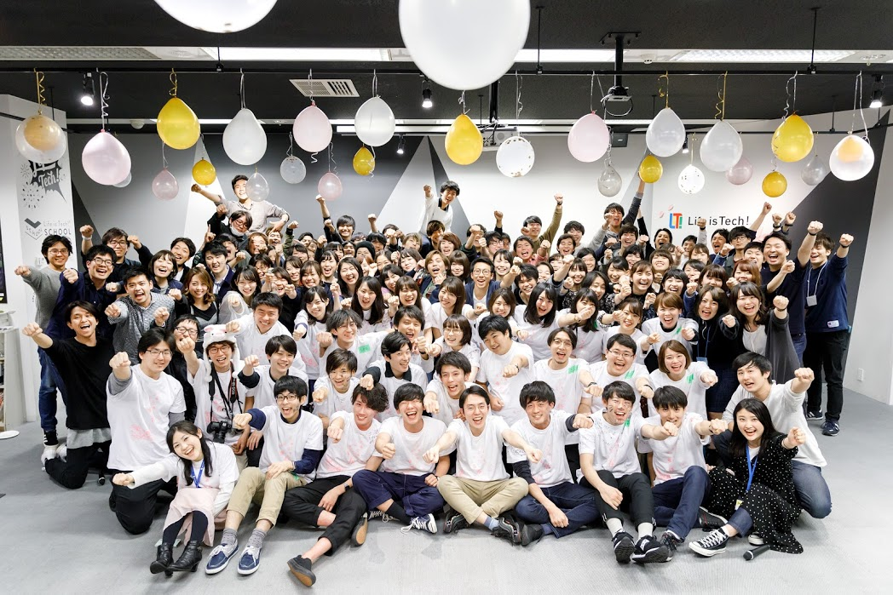作ったロゴはTシャツにして在校生メンターが卒業メンターのTシャツに各々の思いやメッセージを書くのが伝統になっていて背景は白地のデザインでメッセージを書きやすいデザインになっています。
Title
Leaders10th WebデザインコースLOGO
Work
ライフイズテックのメンターを育成するIT教育研修プログラム10期のコースロゴを製作しました。現在、関東、関西合わせて20人ほどの大学生にWebデザインとフロントエンドのプログラミングを教えています。また100人以上の大学生にデザインツールを使った講義をしています。 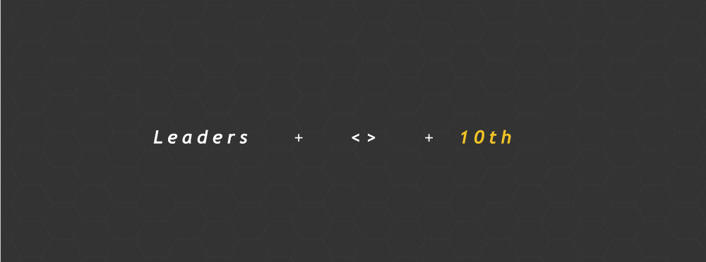 Web上のプログラミングではhtmlタグを使うのでタグのシルエットをメインに「Leaders」の「L」と「10期」の「10」の文字を変形させてシンボルマークにしました。研修に合格した後、光や太陽のように中高生のメンバーを導く存在になってほしいという思いを込めて黄色を使っています。
Title
Motety
Concept
女性の悩みを解決する総合情報サイト
Work
ウイニングクルー株式会社で新規事業の脱毛で悩む女性の悩みを解決するサービスのデザインを担当しました。自分はこの会社で唯一のデザイナーだったのでこのサービスに関わるほとんどのデザインを担当しました。ABテストを繰り返し最適なバナーや画像SEOを意識したサムネイルのデザインを行いました。
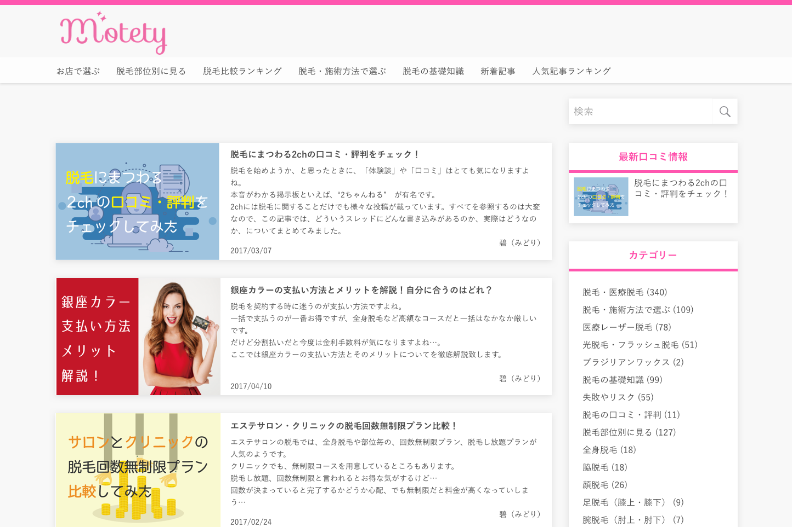
サービスをやっていく上でなかなかPV数が伸びずユーザーに届いていないという問題を定義し、入社して1ヶ月でリデザインを提案しました。
脱毛に悩む女性がどんな情報を求めているかなどをユーザーリサーチや競合サービスのサイトのリサーチを繰り返しました。色やフォントなどのヴィジュアル要素はターゲットが読みそうな雑誌で研究しました。 リサーチを重ね、ピックアップ情報やランキングなどを2カラムで表示させて、ランキング情報にもサムネイルを乗せて記事の内容がイメージしやすいようにしました。
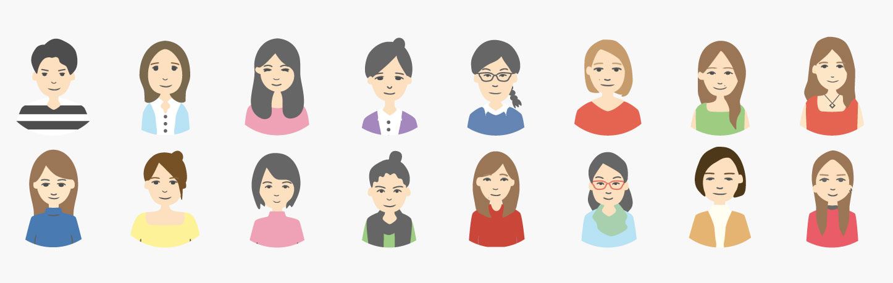
ライターさんのアイコンだったりバナーやサムネイルをデザインしていました。
Title
Match Clothes
Concept
Favorite Clothes of Favorite person
〜お互いに好きな服を着よう〜
Work
デザイナーの登竜門と言われているGoodgatchのサマーインターンに参加した時の作品です。テーマは「ファッション×AI」でサービスを作るというものでした。簡単にサービスを伝えると、AIがお互いの好みやシーンに適したファッションを分析し、レコメンドしてくれるサービスです。PMが1人デザイナーが2人の3人チームで僕はサービスのUIデザインを担当しました。ファッションに関する悩みをアンケートを取った際「自分に合ったファッションが 分からない・決められない人が多い」問題に着目し、そこで僕らは相手の好みやシチュエーションに合っていて、自分も着たいと思える服装を知ることができるサービスを提案しました。 背景として、好きな人とデートをすることが決まった時「よく思われたい」という感情があると思います。そこでこのサービスを使うと初めに自分の好みのファッションを選んでもらう（相手も同様）ので相手が好むファッションとシーン（デート）などを選択することで人工知能がオススメの服をオススメしてくれます。これによりファッションに疎い男性が気軽に服を決めることができてデートでもうまく行くことができるそんなサービスです。
Title
ARCH
Concept
友達をシェアするサービス
Work
大学生に使われるシェアリングサービス サイバーエージェントのインターンUIDA1期生として（UI Design Academy）で「学生に使われるシェアリングサービス」をテーマに友達と友達を繋げるARCHというサービスを提案しました。大学に同じ目標の持った友達がいなかったり同じ趣味を持った友達と繋がりたいという大学生をターゲットにしています。主な使い方は自分の友達をシェアして（紹介文を書いてタイムラインに投稿する）気になった人に友達申請を送ってマッチングさせるシステムです。他のSNSと差別化するためにタイムラインには紹介文しか流れて来ません。自分が繋がりたいワードで検索をかけることにより友達の友達でそのワードとマッチした人が一覧に出て来ます。
Title
和食料理屋ななみ
Concept
和心洋彩
Work
ウィニングクルー株式会社でブランディング事業のクライアントからの依頼で新規OPENする和食料理やのショップカードをデザインしました。 赤坂はオフィス街なので20代~40代会社員をターゲットにデザインしました。お店のコンセプトに和心洋彩というのがあり、 敷居が高い和食料理に洋食のエッセンスを加えることで気軽に和食を楽しむことができるという店主の思いがあったので高級感を出しすぎず且つカジュアルすぎない配色にしました。
Title
クリスマスキャンプ2017 ネームカード
Concept
遊園地
Work
ライフイズテックの一大イベントクリスマスキャンプのネームカードのデザインをしました。今回のテーマが遊園地で会場がアメリカの都市になるということで遊園地のチケットのようなデザインにしました。背景として参加が決まった中高生の家にこのネームカードがついたチケットのデザインが届きそれを会場で切り取りネームカードになるというものです。
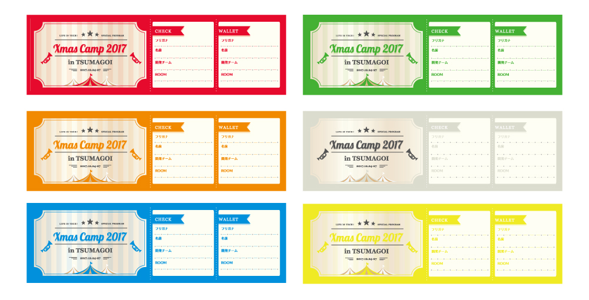
この年は歴代最高の700人規模のITキャンプで一つの会場に6つの部屋に分けられました。部屋の名前はアメリカの州の名前になり各コースで別れるような仕様になっています。
Title
春季講習Tシャツ
Concept
若葉
Work
ライフイズテックでは長期休み期間に行うキャンプと継続的に塾のようにプログラミングを学ぶスクールというものがあります。今回はスクールで春季講習を行った時のTシャツのデザインをしました。
僕らは中高生にアプリをリリースさせたり公開して大会やコンテストに出展してもらい実際に評価してもらい自信をつけてもらうような取り組みをしています。その中で今回のテーマは「若葉」ということで、まだ生い茂っている木のように技術力があるわけではないけど若葉のように始まりの一歩目を今回の春季講習で踏み出そうという思いで決まりました。
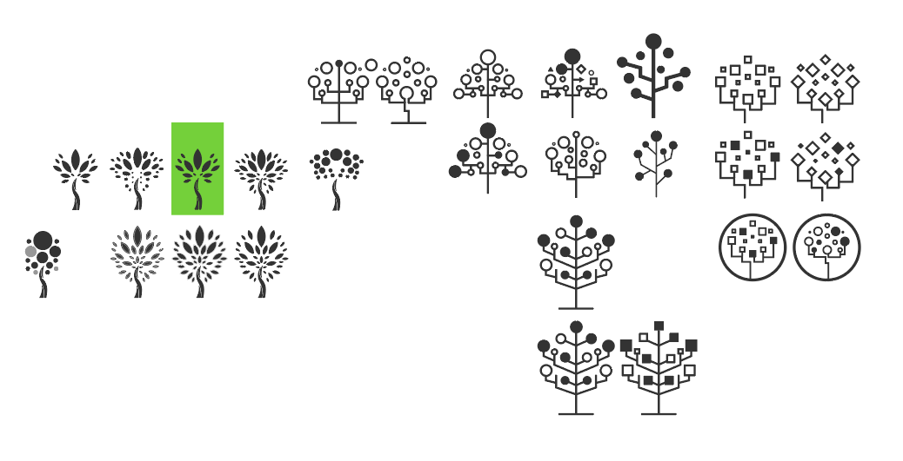
僕はデザインをする上で大事にしていることは「発散と収束」を意識して製作をしています。例えばシンボルマーク一つ作る際にも最初はどういう方向性で行くかたくさんのパターンを出していきます。要素が繋げられそうなところは繋げたりまったく違うパターンを出した上で一つのシンボルマークを決めました。
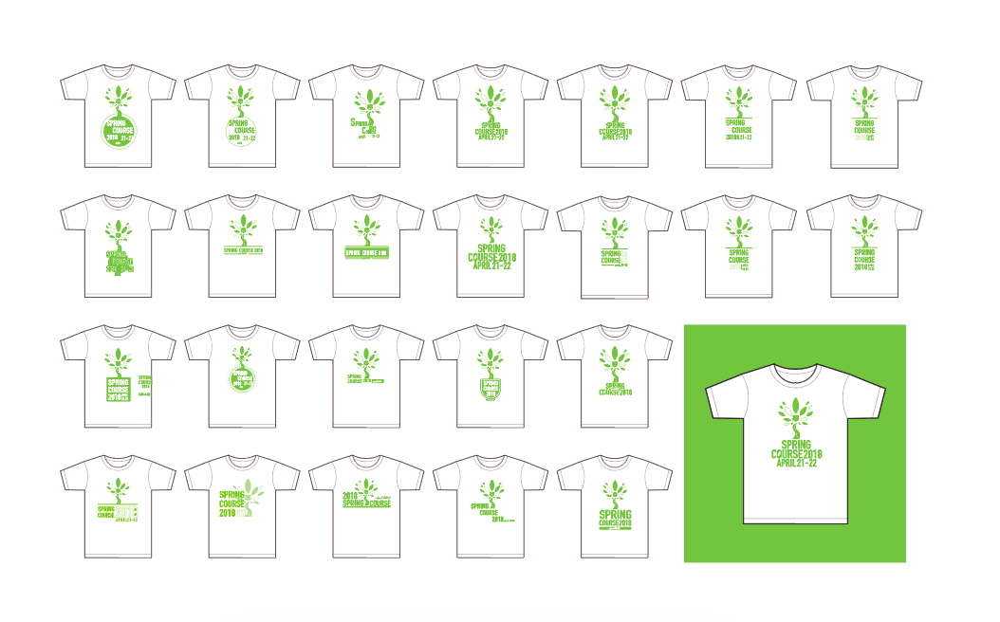
シンボルマークが決まったら次は文字組みでまたパターンを出して発散と収束を繰り返し、最終的にこのアウトプットになりました。